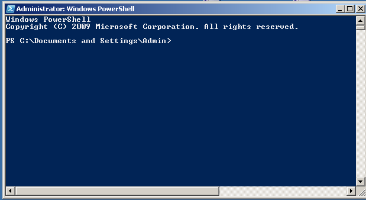
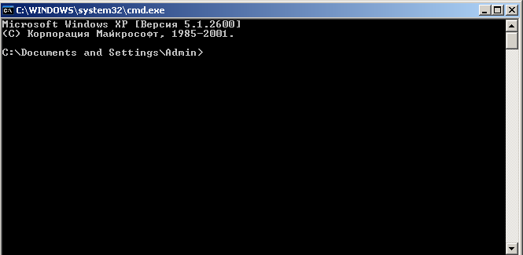
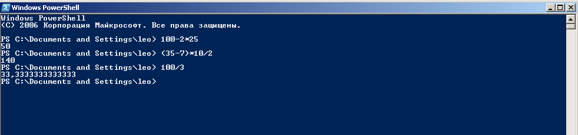
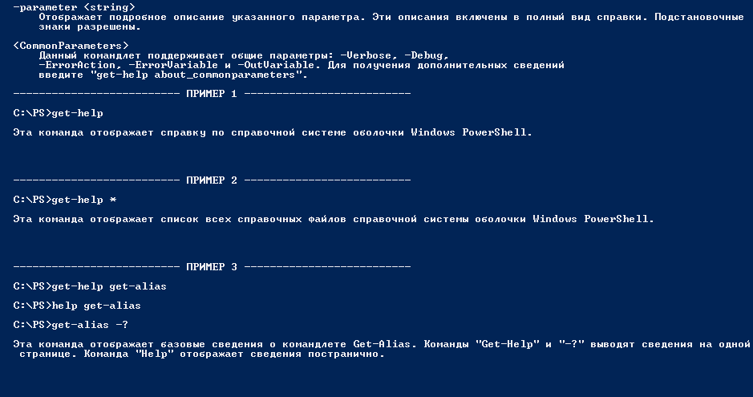

2.2. Командная оболочка PowerShell
Для запуска PowerShell v. 1.0 (v. 2.0) необходимо ввести: Пуск (Start) > Все программы > Windows PowerShell 1.0 > Windows PowerShell. В результате на экране появится окно командной оболочки Windows PowerShell (см. рис. 1) похожее на оболочку классической командной строки cmd.exe.
Другие варианты запуска PowerShell:
Пуск > Выполнить, вводим powershell и жмем кнопку ОК.
В окне командной строки набираем powershell, жмем Ввод.
Для сравнения оболочек PS и CMD запустите обычную командную строку (Пуск > Выполнить > cmd > OK, см. рис 2). На первый взгляд командные оболочки различаются только цветом (цвет фона окна у PowerShell по умолчанию - синий).

Рис. 1. Окно оболочки Windows PowerShell.

Рис. 2. Окно оболочки классической командной строки CMD.
Но приятные различия начинаются уже на уровне реализации операций копирования/вставки. В дополнение к традиционному копированию в окно классической CMD в PowerShell можно осуществлять копирование и вставку любой выделенной ("подсвеченной" левой кнопкой мыши) текстовой части самого окна PowerShell (необходимо выполнить двойной клик правой кнопкой мыши на подсвеченном блоке; это приведет к вставке данного блока на позицию мигающего курсора в окне PS). Другой приятной особенностью, отличающей командную оболочку PS от классической оболочки CMD, является возможность использовать оболочку PS как калькулятор, см. рис. 3.

Рис. 3. Окно оболочки Windows PS отображающее результаты элементарных вычислений.
Главное же отличием PowerShell от предыдущих командных оболочек Windows состоит в том, что Windows PowerShell является объектно-ориентированной командной оболочкой, работающей на основе .NET Framework.
Windows PowerShell предоставляет значительно больше команд, чем классическая командная строка. PowerShell v. 1.0 содержит более 100 командлетов; (в v. 2.0 их более 200). Команды PowerShell состоят из глагола и существительного, разделенных тире. Например: Get-Help (вызов справки по синтаксису PowerShell). В PowerShell включены также псевдонимы многих известных команд; так, например, команды help (стиль Windows) и man (стиль Unix) работают аналогично команде Get-Help.
Для ознакомления с командами Windows PowerShell введите команду: Get-Help_*. Для получения подробной справки (с примерами применения команды) необходимо ввести: Get-Help имя команды –Detailed. Например, для получения сведений о команде help следует ввести: Get-Help Get-Help –Detailed (см. рис. 4).

Рис. 4. Фрагмент вывода команды Get-Help Get-Help –Detailed.
На рис.5 показан фрагмент вывода в окно оболочки PS команды Get-Help Get-Help –Detailed, содержащий примеры ввода команд Get-Help, Get-Help_* и Get-Help Get-alias.

Рис. 5. Фрагмент вывода команды Get-Help Get-Help –Detailed, содержащий примеры.
2.3. Команды PowerShell
Оболочка PS поддерживает следующие типы команд: внешние исполняемые файлы, командлеты, функции, и сценарии.
Внешние исполняемые файлы — это обычные, выполняемые операционной системой файлы. Например, внешние команды интерпретатора cmd.exe (cd, dir, copy и др.). Для ознакомления с этими командами введите в окне CMD команду help. Начинать практическое освоение PS следует именно с этих команд.
Командлет (см пп. 2.1, 2.2) используется внутри PowerShell. Командлеты является классами .NET, порожденными базовым классом CMDLET, который гарантирует их совместимый синтаксис. Командлеты компилируются в динамическую библиотеку DLL и подгружаются к процессу PS во время запуска оболочки PS. Каждый из командлетов (очень простой или сложный) выполняет узкую задачу. Посредством вертикальной черты ( | ) командлеты могут быть организованы в конвейер, в котором объекты предаются от одного командлета к другому.
Для изучения технологии работы с командлетами следует обратиться к справочным материалам PowerShell (Пуск > Все программы > Windows PowerShell 1.0 > Знакомство с Windows PowerShell; Пуск > Все программы > Windows PowerShell 1.0 > Руководство пользователя).
Функция в PowerShell представляет собой блок кода на языке PS, имеющий название и хранящийся в памяти до завершения текущего сеанса командной строки.
Пример простейшей функции:
PS C:\Documents and Settings\leo> function MyF1{"Изучаем PS"}.
Вызовем функцию MyF1 из командной строки:
PS C:\Documents and Settings\leo> MyF1
Изучаем PS
Функции поддерживают работу с параметрами. Например, определим функцию MyF1 с одним параметром:
PS C:\Documents and Settings\leo> function MyF1($q) {"Изучаем $q"}
Вызовем эту функцию с параметром:
PS C:\Documents and Settings\leo> MyF1 PS
Изучаем PS
Как и в других языках программирования в PS при описании функции можно задавать список формальных параметров, значения которых при выполнении функции будут заменены значениями переданных аргументов. Функции в PS в отличие от функций в традиционных языках программирования являются командой, а не аналогом метода объекта.
Для изучения вопросов, связанных с реализацией функции в PS, следует обратиться к названным выше справочным материалам а также к файлу "Краткий обзор языка PowerShell" (Пуск > Все программы > Windows PowerShell 1.0 > Краткий обзор).
Сценарии. Сценарий представляет собой код на языке PS, хранящийся во внешнем файле с расширением ps1. Важной особенностью в плане сетевой безопасности является то обстоятельство, что скрипт с расширением ps1 невозможно запустить на исполнение иначе как, запустив оболочку PS; так что для запуска сценария с расширением ps1 необходимо запустив оболочку PS, ввести имя файла и нажать клавишу Enter.
Сценарии позволяют работать с PowerShell в пакетном режиме с заранее созданными командами на основе управляющих инструкций языка PowerShell. Сценарии в PowerShell в отличие от сценариев WSH и командных файлов cmd.exe можно писать непосредственно в самой оболочке, перенося затем готовый отлаженный код во внешний файл.
Для изучения технологии создания и использования сценариев в PS следует обратиться к названным выше справочным материалам.
3. Порядок выполнения работы
3.1. Изучите материал, изложенный в пункте 2 данной лабораторной работы, и получите индивидуальное задание у преподавателя.
3.2. Включите закрепленный за вами компьютер, выполните необходимую процедуру регистрации согласно присвоенной вам администратором (преподавателем) учетной записи и паролю.
3.3. Запустите командную оболочку Windows PowerShell и реализуйте следующее:
запуск в оболочке PS основных команд оболочки cmd.exe;
ознакомьтесь с возможностями оболочки PS как калькулятора;
ознакомьтесь и поработайте с отдельными командами и псевдонимами команд PS;
получите и оформите подробное описание командлета Get-Help;
дайте описание пяти наиболее интересных, на Ваш взгляд, командлетов PowerShell.
3.4. Выполните индивидуальное задание.
3.5. Выключите компьютер и приведите в порядок рабочее место.
4. Содержание отчета
4.1. Цель работы.
4.2. Краткую характеристику Windows PowerShell и результаты выполнения индивидуального задания.
4.3.Выводы по работе.
5. Контрольные вопросы.
1. Дайте общую характеристику Windows PowerShell.
2. Чем обусловлена необходимость создания PowerShell?
3. Какие типы команд поддерживает оболочка PS?
4. Чем различаются командные оболочки CMD и PS?
5. В чем состоит принципиальное различие сценариев WSH и PS?
1. Попов А.В. Введение в Windows PowerShell. -- СПб.: БХВ-Петербург, 2009. – 464c.
2. Борн Г. Руководство разработчика на Microsoft Script Host 2.0.Мастер класс/ Пер. с англ. – СПб.: Питер, 2001. – 480c.
3. Торрес Дж. Скприпты для администратора Windows. Специальный справочник. – СПб.: Питер, 2002. – 336c.